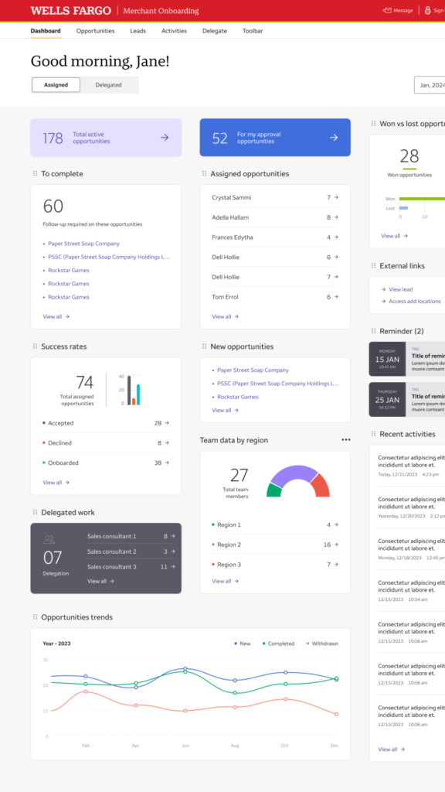

Merchant Services
Concept to executive demo in 6 weeks
Designing a personalized, responsive dashboard that helps merchant onboarding teams see their work, their wins, and their team at a glance.

Marylynne Berei · Senior Lead Product Designer · Visuals recreated to protect confidential information
BeforeThe original Merchant Onboarding dashboard
 1
2
3
4
1
2
3
4
- 1A wall of text
Consultants scanned rows of plain data to work out what needed them next.
- 2No control
Sort one column at a time. No way to shape a view around how they actually worked.
- 3Status gaps slipped by
Pending approvals and urgent follow-ups were easy to miss in all the scrolling.
- 4Broke on smaller screens
On tablets and small laptops, the right-hand columns were cut off, forcing a horizontal scroll.
Consultants wanted their work at a glance, on their terms.